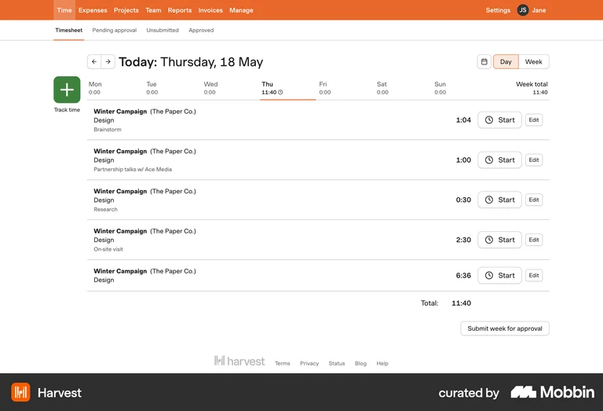
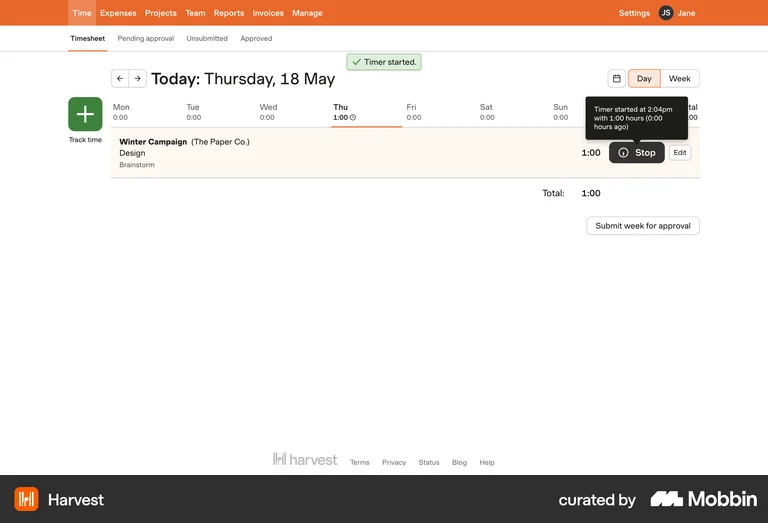
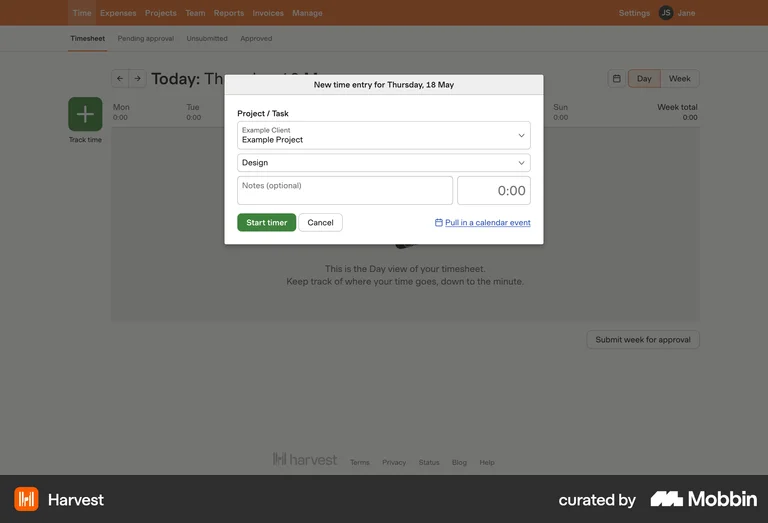
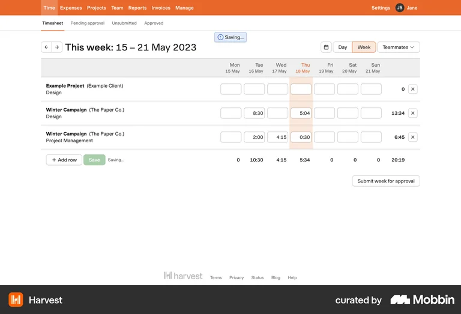
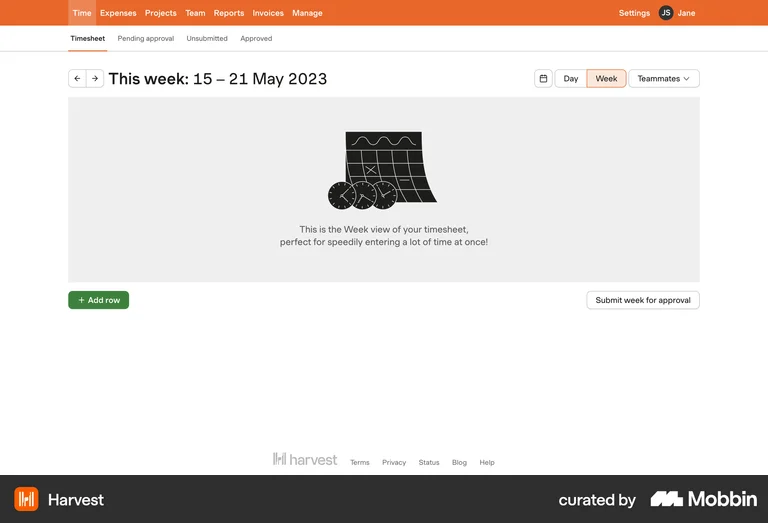
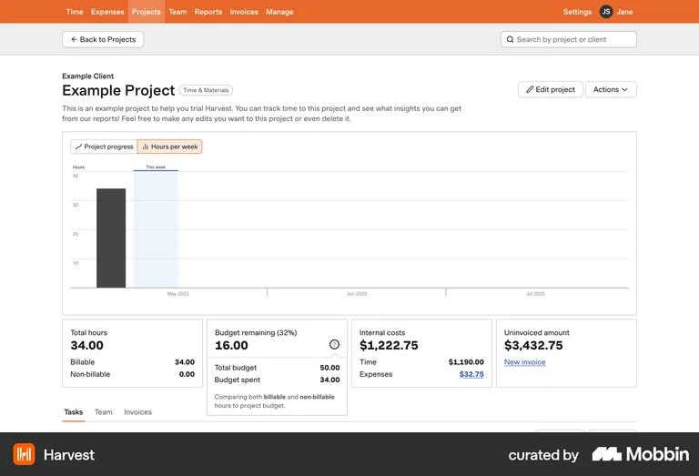
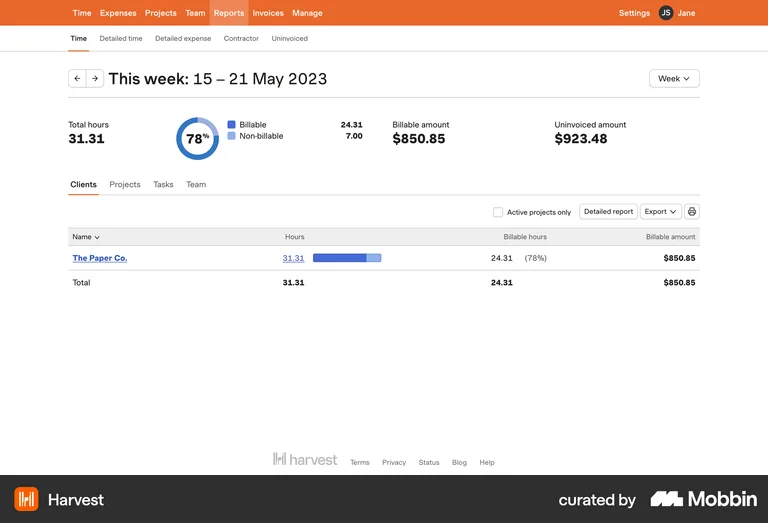
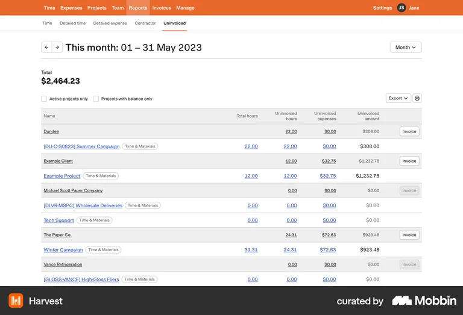
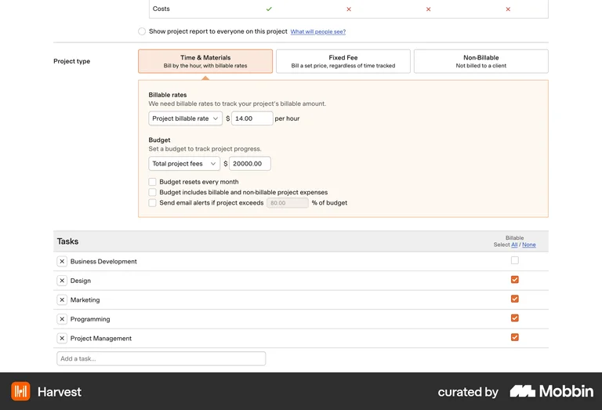

Конкуренти
Три групи розрізняються не розміром компанії, а тим, наскільки близько продукт стоїть до задачі prodrec. Аспіраційні в порівняння по осях не йдуть: інша аудиторія і монетизація, вони потрібні як референс ремесла, а не як конкурент.
ХАРДТой самий продукт, та сама аудиторія
| Продукт | Чому тут | Що вивчити |
|---|---|---|
| Freelance Pay Calculator | Безкоштовний веб-калькулятор денної і годинної ставки з податком. Найближча форма до prodrec. | Як пояснюють формулу — звідки взялася цифра. І де їхня межа: разовий калькулятор без пам'яті. |
| Hnry | Обіцянка один в один: «ніколи не думай про податок», показують чисте на руки. Аудиторія — соло, sole trader. | Подача однієї обіцянки замість списку фіч. Сценарій «прийшло → відклали податок → чисте». |
| Bonsai | Комбайн для фрилансера з блоком податків. Забирає ту саму аудиторію ширше. | Чого не робити: важкий, скарги на підтримку. Аргумент бути маленьким. Плюс цінова сходинка. |
СОФТІнший продукт, та сама базова задача
| Продукт | Чому тут | Що вивчити |
|---|---|---|
| Toggl Track | Трекінг проєктів без грошей на виході. Одиниця — година. | Звіти й фільтри: «скільки цей клієнт дав за квартал». Порожні стани. |
| Harvest | Трекінг, доведений до суми і рахунку клієнту. | Перехід «час → сума». Картка проєкту з бюджетом і залишком. |
| Google Sheets / Notion | Головний реальний конкурент: більшість соло веде дні в таблиці. | Які колонки люди заводять руками — готовий список полів. І що таблиця не вміє: швидко занести день з телефона. |
АСПІРАЦІЙНІЕталони ремесла, не конкуренти
| Продукт | Чому тут | Що вивчити |
|---|---|---|
| Linear | Планка ремесла в категорії трекінгу. | Тиша інтерфейсу: ієрархія типографікою і відступами, майже без кольору. Система станів. |
| Copilot Money | Еталон подачі грошей людині. | Головне число, валюта, м'які кольори замість червоно-зеленого світлофора. |
| Strava | Перетворює нудний лог у те, куди хочеться повертатись. | Агрегація й ритм: тижневі підсумки, серії, «цей місяць проти минулого». |
Бенчмарк
П'ять продуктів по п'яти осях. Перша колонка зафіксована — таблицю можна гортати вбік.
| Freelance Pay Calculator | Hnry | Bonsai | Toggl Track | Harvest | |
|---|---|---|---|---|---|
| Аудиторія | Соло, який рахує ставку. 7 юрисдикцій на вибір: US, UK, DE, FR, UAE, IND, інші | Sole trader в AU / NZ / UK. Жорстко одна юрисдикція | Фрилансери й малі агенції, US-центрично (1099, квартальний податок) | Команди — «where teams and time tracking data meet». Соло на безкоштовному | Команди й агенції, але Free-тариф підписаний «built for individual freelancers» |
| Основа продукту | Односторінковий калькулятор, без реєстрації | Сервіс, не софт: бухгалтерія як послуга + власний рахунок | Комбайн: CRM, проєкти, час, рахунки, контракти + Bonsai Tax | Таймер + звіти | Трекер часу, зшитий з рахунками |
| Ключовий механізм | Від бажаного чистого доходу назад до потрібної ставки. Віднімає вихідні, свята, відпустку, лікарняні, % білабельності → 226 білабельних днів → денна ставка | Гроші клієнта приходять на Hnry-рахунок → податок утримується автоматично → на карту падає вже чисте | Витрати з банку → категоризація → списання → оцінка квартального податку | Старт / стоп → запис → звіт по проєкту. Білабельні ставки на платних тарифах | Години → рахунок клієнту → оплата |
| Довіра | Прозора формула + ринкові бенчмарки ставок за професією і рівнем | Trustpilot 682 відгуки на першому екрані, живі бухгалтери, service agreement | 1030+ відгуків, куплений Zoom, кейси. Мінус: скарги на підтримку і затримки виплат | Масштаб, 100+ інтеграцій, безкоштовний тариф назавжди | Логотипи VW, FedEx, Yale, «понад 70 000 компаній» |
| Монетизація | Безкоштовно. Партнерські посилання на бухгалтерський софт + PDF-звіт | 1% + GST з кожного платежу, стеля $1 500/рік. Без підписки | Підписка $9 / $19 / $29 / $49 за юзера на місяць (річна оплата) | Free / $9 / $14 за ліцензію на місяць | Free (1 місце, 2 проєкти) / $9 / $14 за місце + оплата за використання |
Дані зібрані з відкритих сторінок 7 серпня 2026. Продуктові екрани Hnry, Bonsai, Toggl і Harvest закриті логіном — оцінка за маркетинговими сторінками.
Патерни
Дві різні речі під одним словом: як влаштований ринок і як влаштований ввід даних. Перше визначає позиціювання, друге — інтерфейс.
РИНОКТри спільні патерни
- Усі рахують назад від грошей, а не від часу. Цінність не в записі, а в підсумковій сумі: ставка, рахунок, податок. Навіть таймерні продукти виводять до суми.
- Вхід безкоштовний, гроші — за продовження. У всіх п'ятьох або free-тариф, або відкритий калькулятор. Платять не за розрахунок, а за те, щоб він зберігся і повторився сам.
- Довіра купується соціальним доказом на першому екрані. Trustpilot, кількість відгуків, логотипи клієнтів — вище за опис фіч, без винятку.
ЧАСКоли кожен дає цифру
Та сама ознака в розрізі часу: різниця між конкурентами не у функціях, а в тому, в який момент вони ставлять відповідь.
| Продукт | Коли дає цифру | Що лишається між подіями |
|---|---|---|
| Freelance Pay Calculator | До роботи, один раз — яка ставка мені потрібна | Нічого. Вкладку закрив — цифри немає |
| Hnry | У мить платежу — скільки впало чистими | Баланс рахунку. Але тільки коли платіж стався |
| Bonsai | У кінці кварталу — скільки винен податковій | Дані копляться, відповідь чекає до звіту |
| Toggl / Harvest | Після роботи, коли виставляєш рахунок | Журнал годин. Стан треба зібрати звітом самому |
| Google Sheets | Тоді, коли себе змусив | Таблиця, яка не рахує, поки ти в неї не сів |
ІНТЕРФЕЙСП'ять патернів вводу
Розрізняються не виглядом, а тим, звідки береться запис про роботу. Це головна вісь; кольори й панелі вторинні.
| Патерн | Як працює | Приклади | Підходить, коли | Ламається, коли |
|---|---|---|---|---|
| 1. Календар-полотно | Сітка місяця, день = клітинка. Клік або drag фарбує день проєктом. Підсумок рахується збоку живцем | Google Calendar, Notion Calendar, Airbnb, Cal.com | Одиниця обліку — день; 1–3 проєкти; ввід ретроспективний; треба бачити прогалини | В один день три проєкти по 2.5 год; горизонт довший за місяць; вузький мобільний |
| 2. Таймер подій | Старт / стоп, система пише факт часу. Інтервал потім треба віднести до проєкту | Toggl, Clockify, Harvest, Everhour | Платять за фактичні години; клієнт вимагає деталізацію; часте перемикання | Забув запустити — даних немає; забув зупинити — дані брехливі; денна ставка робить хвилини зайвими |
| 3. Timesheet-матриця | Рядки — проєкти, колонки — дні, у клітинках години. Суми по обох осях | Jira Tempo, Clockify timesheet, Excel | Багато проєктів; день реально ділиться; треба швидко ввести обсяг з клавіатури | Найменш людяний з п'яти — саме він викликає відразу до обліку; на мобільному не працює |
| 4. Швидкий ввід рядком | Одне поле, природна мова: «Клієнт А вчора». Парсер створює записи | Things, Todoist, Superhuman, Linear, Slack-боти | Досвідчений користувач, висока частота вводу; як надбудова над іншим патерном | Перший день: порожнє поле не показує, що можна написати. Двозначність коштує довіри |
| 5. Документ-калькулятор | Інтерфейс — сам інвойс. Рядки в ньому і є дні. Змінив ставку — сума перерахувалась тут же | Stripe Invoicing, Bonsai, Notion-шаблони | Мета — виставити рахунок, а не вести облік; записів небагато | Щоденний ввід: відмічати сьогоднішній день у фінансовому документі незручно й тривожно |
Вибір для prodrec: календар-полотно як основа, timesheet-матриця третім виглядом тих самих даних — за умови, що поділений день стане нормою. Таймер відпадає: одиниця не та, вимагає присутності в момент роботи і не ремонтується, коли його забули.
Harvest зблизька
Дев'ять екранів продукту, який у бенчмарку єдиний доводить трекінг до суми. Дивимось не на вигляд, а на ціну вводу і на те, де в них закінчується відповідь на питання «скільки моє».
ВВІДЯк заносять роботу





ГРОШІДе час стає сумою




Про таймер окремо: він тут на екранах 2 і 3. Рішення з ux-patterns.md не переглядаю — просто кладу поруч, щоб було видно, від чого саме відмовляємось: від старту-стопу, від крихкого стану «йде» і від хвилин, які все одно округляться до дня.
Скріни — Mobbin, застосунок Harvest (web), зібрані через Mobbin MCP. Клік на картинку відкриває оригінальний екран на Mobbin. Копії лежать локально в screens/harvest/, щоб сторінка працювала без інтернету — але це чужий матеріал, а research/ віддається публічно з GitHub Pages. Перед публікацією їх варто прибрати або лишити самі посилання.
Висновки
Що з усього цього випливає: одна спільна ознака, три вільні місця, одна біль і три питання, на які відповіді ще немає.
Спільна ознака
Усі продають впевненість у цифрі — і всі дають її разово, в точці події. Облік у них не цінність, а ціна, яку користувач платить за цю цифру. Між подіями цифру не тримає живою ніхто.
Три вільні місця
- Одиниця обліку. Година (Toggl, Harvest) проти доходу і ставки (Calculator, Hnry). День не є основою в жодного — денна ставка існує лише як похідне число. Це вільне місце, і саме воно робить запис дешевим: день майже бінарний факт, година вимагає таймера й уваги протягом дня.
- Прив'язка до юрисдикції. Hnry і Bonsai вросли в одну податкову систему і тому не можуть на «Світ». Калькулятор бере мультикраїнний перемикач — і через це не може автоматизувати сплату.
- Соло проти команди. Toggl і Harvest продають місця. Соло-фрилансер у них завжди на найдешевшому краю і ніколи не є головним героєм.
Головна біль користувача
Не «не вмію порахувати ставку» — це разова задача, її калькулятор закриває за дві хвилини і безкоштовно. Біль звучить інакше:
«Я не знаю, як у мене йде цей місяць — і кожне рішення приймаю наосліп.»
- Видимий шар
- Вести облік незручно. Забув, ліньки, таблиця з телефона — біль.
- Справжній шар
- Тривога від невизначеності. Облік — просто ціна, яку платиш, щоб цю тривогу зняти.
- Наслідок
- У всіх конкурентів ця ціна вища за полегшення. Тому люди кидають облік.
Що це означає для prodrec
- Запис має коштувати менше, ніж відповідь, яку він повертає. Тап → одразу оновлений стан місяця. Не «дякую, збережено».
- Головний екран — це стан, а не журнал. Список днів вторинний. Відповідь на «як мій місяць» видно без жодної дії.
- Довіру бери формулою, не відгуками. Відгуків немає і не буде рік. Показуй, звідки взялася цифра — це те, що робить Calculator, і це працює.
Три відкриті питання
- Ринок. Якщо «Світ» — податок вводить користувач сам, і обіцянка слабша за «ми порахуємо за тебе». Чи готові на цей розмін заради охоплення?
- Навіщо повертатись. Калькулятор відкривають один раз. Що дає причину відкрити prodrec на 30-й день? Судячи з ознаки вище, це діра не в prodrec, а в усій категорії.
- Гроші. Підписка, відсоток від доходу чи безкоштовно з партнерками? Відсоток недоступний без власного рахунку і юрисдикції — отже реально лишається два варіанти.
Персони
Спершу — усе, що ресерч насправді каже про людей, і окремо те, чого він не каже. Персони зібрані на цій основі: [?] позначає припущення, яке нічим не підперте. Без позначки — те, що видно в матеріалах.
Чесно, з самого початку
У ресерчі немає жодної репліки живої людини. Ні інтерв'ю, ні поста з форуму, ні дослівного відгуку. Усе, що ми «знаємо» про людей, виведено з чужих маркетингових сторінок. Тому поле «цитата» в персонах лишається порожнім — вигадати її було б найгіршим, що можна зробити з цим документом.
ДОКАЗИЩо ресерч каже про людей
| Що маємо | Звідки це | Наскільки твердо |
|---|---|---|
| Хто шукає | Соло і sole trader — у Hnry, Calculator, Bonsai. Toggl і Harvest продають місця командам, соло в них на найдешевшому краю. Harvest підписує Free-тариф «built for individual freelancers» | Твердо — прямо зі сторінок п'яти продуктів |
| Де вони зараз | Більшість соло веде дні в таблиці. Google Sheets і Notion-шаблони записані головним реальним конкурентом | Наше твердження в competitors.md. Джерело під ним не вказане [?] |
| Що ними рухає | Знати чисте на руки після податку (обіцянка Hnry). Вирахувати потрібну ставку від бажаного доходу (механізм Calculator: мінус вихідні, свята, відпустка, лікарняні → 226 білабельних днів). Довести годину до рахунку й оплати (Harvest) | Це те, що продають продукти, а не те, що казали люди |
| Чого бояться | Податку — настільки, що ціла обіцянка Hnry звучить «ніколи не думай про податок». Квартальних платежів у США (Bonsai). Затримок виплат і мовчання підтримки — зафіксовано як скарги на Bonsai | Страх виведено зі структури обіцянки. Скарги на Bonsai — переказ без джерела [?] |
| Як обирають | Соціальний доказ на першому екрані в усіх без винятку: Trustpilot 682, 1030+ відгуків, логотипи VW, FedEx, Yale, «70 000 компаній», 100+ інтеграцій. Альтернатива — прозора формула і бенчмарки ставок, як у Calculator. Заходять безкоштовно завжди: free-тариф або відкритий калькулятор | Твердо — це спостереження за першими екранами |
| Де зриваються | Забув запустити таймер — даних немає; забув зупинити — дані брехливі. Timesheet-матриця «викликає відразу до обліку». Порожнє поле швидкого вводу не підказує, що писати. Заносити сьогоднішній день у фінансовий документ «незручно й тривожно». Таблиця не дає швидко занести день з телефона. Калькулятор відкривають один раз | Наш аналіз патернів в ux-patterns.md. Логічно, але не міряно на людях [?] |
ДІРИЧого про людей ми не знаємо
- Жодної розмови. Нуль інтерв'ю, нуль спостережень. Увесь портрет користувача зібрано з того, як конкуренти себе продають.
- Жодної цитати. Ми знаємо, що в Hnry 682 відгуки, але не читали з них жодного. «Скарги на підтримку» в Bonsai записані без посилання й без тексту.
- Головна біль — гіпотеза. «Не знаю, як іде цей місяць» вивів я в positioning.md логічним шляхом із чужих продуктів. Це не те, що хтось сказав.
- Скільки клієнтів одночасно. Від цього залежить, чи працює календар-полотно: ux-patterns.md прямо каже, що він ламається на трьох проєктах в один день — і не знає, наскільки це часто.
- Чи день узагалі одиниця. Скільки фрилансерів реально продають день, а не годину чи проєкт цілком, ми не міряли. Це основа продукту й найбільше припущення в ньому.
- Що люди тримають у таблиці. Ресерч сам поставив задачу «які колонки заводять руками» — і не виконав її.
- Коли відкривають облік. Щодня, раз на тиждень чи тільки перед інвойсом — невідомо. Від цього залежить увесь дизайн головного екрана.
- Готовність платити. Ціни конкурентів відомі. Скільки готовий платити наш соло — ні.
- Географія й податковий режим. Відкрите питання №1 з competitors.md досі відкрите, а воно визначає, чи можлива взагалі обіцянка «ми порахуємо за тебе».
- Хто ще дивиться на дані. Бухгалтер, клієнт, податкова чи ніхто — не знаємо. Це змінює вимоги до експорту.
ПЕРСОНИЧотири профілі
Три з них ідуть від тієї самої одиниці — дня, — але приходять із різних ситуацій. Четвертий узагалі не про облік, а про вхід у продукт.
Даша, контракт на денній ставці ГОЛОВНА
Соло, 1–3 клієнти одночасно, продає дні. Веде облік у Google Sheets.
- Контекст
- Дизайнерка або розробниця на себе [?]. Кілька клієнтів паралельно, кожен бере в неї дні, а не години. Таблиця з колонками «дата — клієнт — ставка» і формулою на податок унизу. Вік, гео, стаж — [?], у ресерчі цього немає.
- Задачі
- Відмітити відпрацьовані дні, не перериваючи роботу
- Побачити, скільки набігло за місяць
- Зрозуміти, скільки з цього лишиться після податку й комісії
- Зібрати цифру для рахунку клієнту
- Болі
- Таблиця не рахує, поки в неї не сів — стану місяця просто не існує між заходами. Формули ламаються, коли копіюєш минулий місяць. З телефона занести день майже неможливо. Сума в таблиці брудна: до податку й комісії. І це не одне середовище — дні в таблиці, домовленості в пошті, рахунки ще десь.
- Довіра
- Видима формула — видно, звідки взялася цифра. Робота без реєстрації. Дані лишаються в неї.
- Відлякує
- Реєстрація на першому екрані [?]. Тарифи «за місце» — вона одна. Вимога вибрати юрисдикцію, якої немає в списку.
- Цитата
[?] Реальної цитати немає. Найближче, що є в ресерчі, — наше ж речення «більшість соло веде дні в таблиці», без джерела. Де брати справжню: r/freelance, r/graphic_design за запитами про day rate і таблиці; відгуки на Google Sheets-шаблони для фрилансерів.
Ігор, один довгий контракт
Фултайм на одного клієнта, 5 днів на тиждень, ставка за день.
- Контекст
- Один замовник забирає весь його час на місяці вперед. Іноді пауза, свята, відпустка. Наскільки цей сегмент масовий — [?], ресерч його не міряв.
- Задачі
- Не так трекати, як рахувати: скільки робочих днів вийшло цього місяця, скільки з'їли свята й відпустка, скільки це в грошах на руки. Це рівно той механізм, який Calculator робить один раз наперед — але Ігору він потрібен щомісяця.
- Болі
- Усі трекери зроблені під багато проєктів, а йому треба один. Таймер безглуздий, коли день завжди повний. У Harvest, щоб записати роботу, треба спершу завести клієнта, проєкт і задачу — чотири поля на день, який завжди однаковий.
- Довіра
- Цифра збігається з тією, яку він порахував сам у голові. Видно, які саме дні враховані.
- Відлякує
- Обов'язкове заведення проєктів і задач перед першим записом. Інтерфейс, який виглядає як інструмент для агенції.
- Цитата
[?] Немає. Де брати: форуми контракторів у UK та AU про day rate і «умовні дні»; обговорення Hnry на Trustpilot — там саме ця аудиторія sole trader.
Марта, найм плюс фриланс на боці
У штаті на фултаймі, 1–2 проєкти ввечері й на вихідних.
- Контекст
- Фриланс — другий дохід, і саме він ніде не врахований: зарплату рахує бухгалтерія роботодавця, а підробіток не рахує ніхто. Чи є така людина в цільовій аудиторії prodrec — [?], це рішення ще не ухвалене.
- Задачі
- Зрозуміти, чи вартий цей підробіток витраченого часу. Не проґавити податок з нього. Побачити, скільки він реально приніс за рік.
- Болі
- Вона відкриває облік раз на місяць, а не щодня — будь-який таймер тут мертвий за визначенням. Через три тижні не пам'ятає, які саме дні працювала. Ретроспективний ввід у більшості інструментів болючий: у таймерних продуктів даних просто немає, якщо не натиснув старт.
- Довіра
- Можливість спокійно заповнити заднім числом, не зламавши дані й не отримавши докір від інтерфейсу.
- Відлякує
- Підписка $9–14/місяць за інструмент, у якому вона проводить двадцять хвилин на місяць.
- Цитата
[?] Немає. Де брати: треди про side income і «скільки я насправді заробив на підробітку»; відгуки на безкоштовні тарифи Toggl від людей, які не в командах.
Тарас, щойно вийшов у фриланс
Ставки ще немає. Головне питання — скільки просити.
- Контекст
- Це користувач Freelance Pay Calculator у чистому вигляді: приходить із питанням про ставку, а не про облік. Єдина персона, яку ресерч бачить прямо — бо під неї побудований цілий продукт.
- Задачі
- Порахувати денну ставку від бажаного чистого доходу. Звірити її з ринком за професією і рівнем. Не продешевити.
- Болі
- Калькулятор дає одну цифру — і на цьому все закінчується. Через місяць він не знає, чи вгадав зі ставкою, бо порівняти немає з чим: пам'яті в калькулятора немає.
- Довіра
- Ринкові бенчмарки за професією і рівнем. Прозора формула замість чорної скриньки.
- Відлякує
- Режим «Світ», де податок треба вводити самому: для новачка це саме те, чого він не знає. [?] Припущення — що для нього це страшніше, ніж для досвідченого.
- Цитата
[?] Немає. Де брати: питання «how much should I charge» у профільних спільнотах; коментарі під калькуляторами ставок.
Чому головна — Даша
Тому що вона — єдина точка, де сходяться всі три знахідки ресерчу разом.
- День як одиниця. Вільне місце, знайдене в бенчмарку, існує тільки для того, хто продає дні. Даша продає дні. Ігор теж — але в нього їх завжди п'ять на тиждень, і продукт йому потрібен раз на місяць, а не щодня.
- Соло, а не команда. Toggl і Harvest продають місця, і соло в них ніколи не головний герой. Даша — саме та, кого ринок обслуговує за залишковим принципом.
- Таблиця як реальний конкурент. Ми забираємо людину не в Harvest, а в Google Sheets. Даша сидить саме там.
Плюс технічний аргумент: обраний інтерфейс — календар-полотно — працює при 1–3 проєктах і ламається далі. Це рівно Дашин профіль. Ігор і Марта потрібні як краї, на яких перевіряють, чи не розсипається продукт; Тарас — це вхідні двері, а не утримання, і ресерч прямо каже, що калькулятор відкривають один раз.
Що зробити, щоб ці персони перестали бути припущеннями: п'ять розмов по сорок хвилин із людьми, які виставляють рахунки за дні. Питати не про продукт, а про останній місяць: де записували, коли останній раз сідали рахувати, що робили перед відправкою рахунку. Після цього половину [?] на цій сторінці можна буде зняти або переписати.
Скріни
Зняті особисто 7 серпня 2026, 1440×900. Клік відкриває оригінал. Продуктові екрани чотирьох із п'яти закриті логіном — це саме по собі дані про категорію.